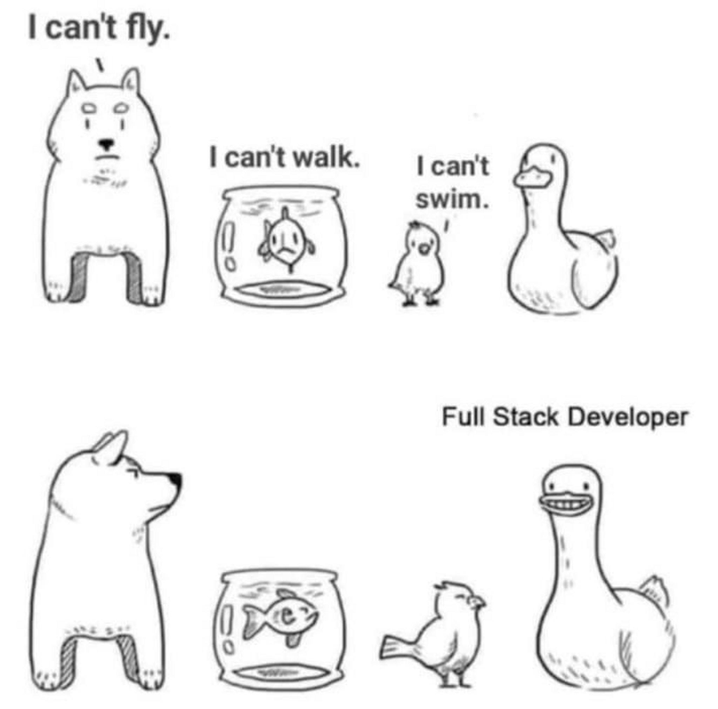

Course intro · Using AI in this course · What is quality · What can be tested
→ next slide | ESC overview
1. Course introduction — structure, grading, prerequisites
2. Using AI in this course — the ground rules
3. Who is teaching this — and who are you
4. What is quality? — car or code, and the seven aspects
5. What is testing? What can be tested? Verification vs validation
Working experience:
2025 – DoorDash / Wolt / Deliveroo — Staff QA Engineer / Lead QA
2023 – TPT — Visiting Lecturer
2020–25 CyberCube — QA Automation Engineer → Engineering Manager
2019 Testlio — Test Automation Specialist
2015–19 Evitec — QA Engineer → System Analyst
2016–19 TalTech — Assistant / Visiting Lecturer
Education: MSc Engineering, TalTech · BSc Engineering, TalTech
Languages: Estonian · English · Russian
Key references: ISTQB Foundation · Agile Methodology · Clean Code by Robert C. Martin · BABOK
AI tools — ChatGPT, Claude, Gemini, Copilot and the rest — are allowed and encouraged in my subjects. Using AI well is a real skill for both developers and testers today.
Full treatment, with worked good and bad examples: bonus lesson on using AI responsibly.
The topics and exercises are chosen for what the job market actually expects from a junior QA engineer or developer.
Speak up — we go round the room.
Questions:
Quality is quality. The standard is the same — whether it rolls on four wheels or runs on a server.
Quality software is defect-free software, delivered on time and within budget, that meets requirements and expectations — and is maintainable.
The process of evaluating software quality and checking whether the product:
Software testing is the process of executing a program or application with the intent of finding software defects.
Note the two halves: evaluating quality (are we building the right thing?) and finding defects (are we building it right?).
Testing is not "clicking the app at the end". Every artefact in the project can be tested — and the earlier you test it, the cheaper the fix.
A product can pass every verification check and still fail validation — it was built exactly as specified, and the specification was wrong.

"It works" is a claim. This course is about being able to say precisely what works, under which conditions, and what you did not check.
No formal submission — but come prepared to talk:
Full brief: Homework 1